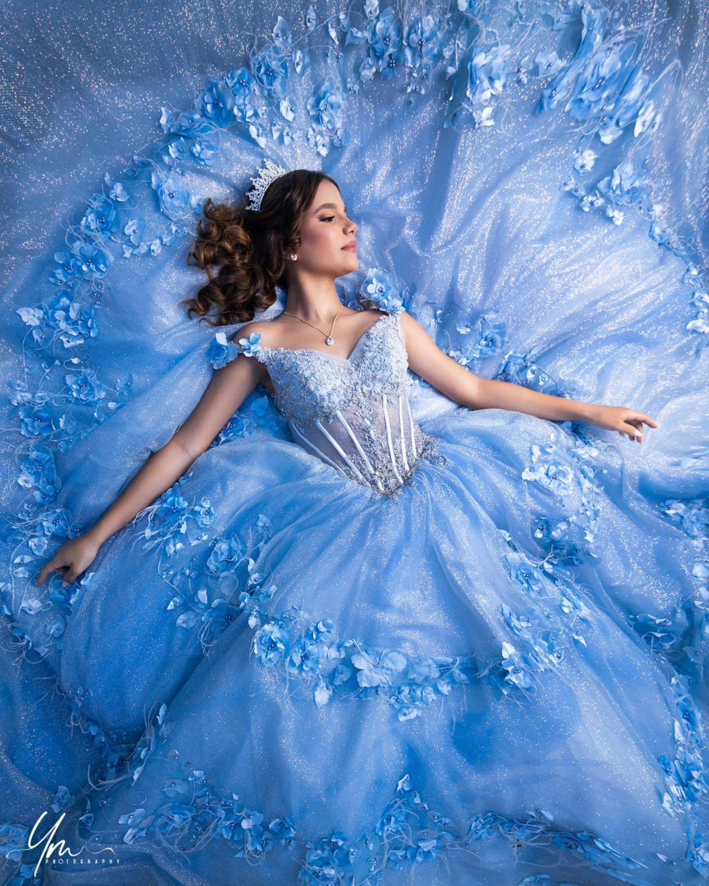
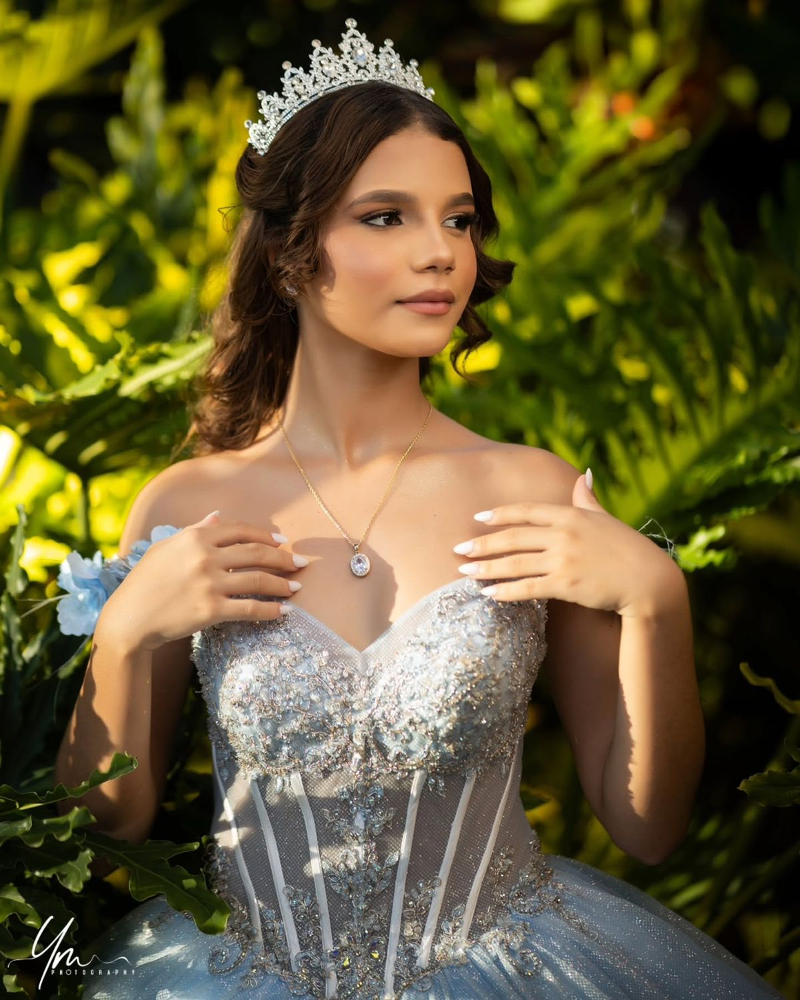
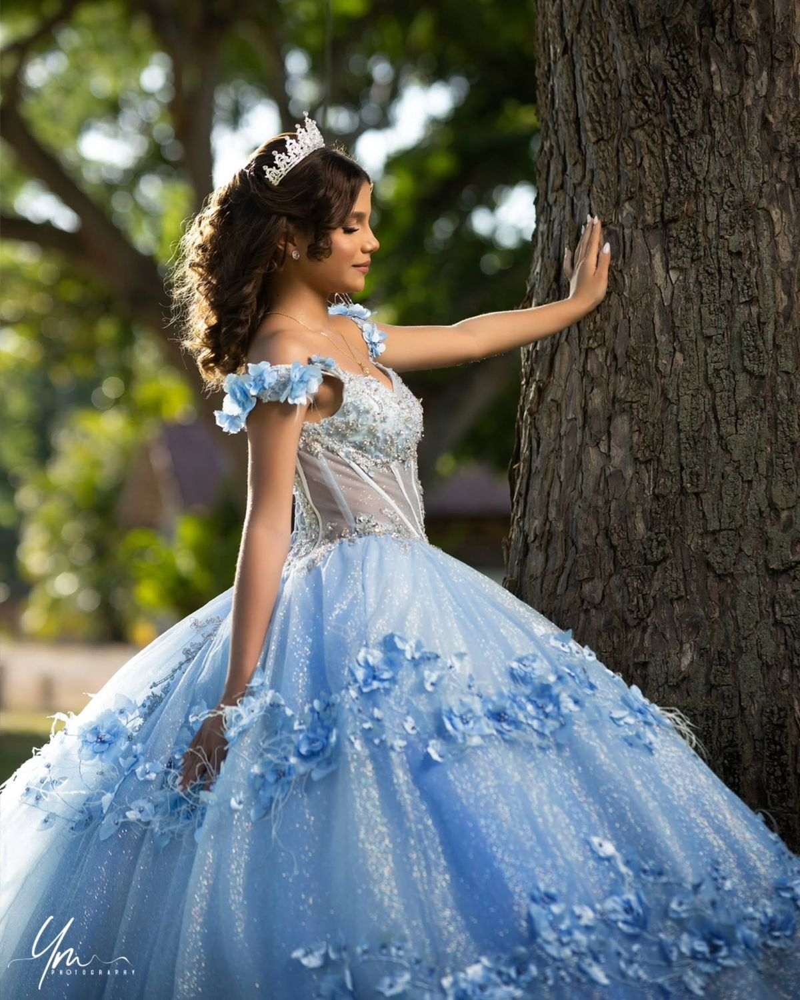

Álbuns em formato de carrossel
As imagens foram organizadas por sessão para facilitar a navegação dos visitantes e valorizar o trabalho do fotógrafo.
Sessão fotográfica
15 Anos
Momentos especiais com delicadeza, luz e personalidade.






Sessão fotográfica
Crianças
Fotografias espontâneas, alegres e cheias de vida.


Sessão fotográfica
Gravidez
Registros sensíveis de uma fase única e emocionante.


Sessão fotográfica
Formaturas
Celebrações de conquistas com elegância e emoção.


Sessão fotográfica
Noivas
Ensaios românticos para eternizar grandes histórias.